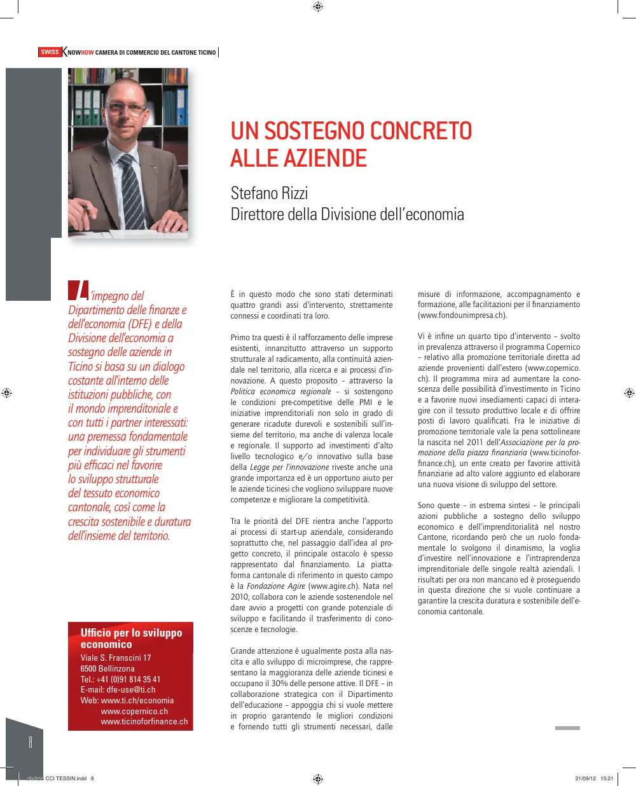

Éditorial · Swiss Knowhow – Camera di commercio del Cantone Ticino (Cc-Ti) (2012)
Un Ticino propizio per l'economia
La bufera economico-finanziaria internazionale scatenatasi nel 2008, con le sue conseguenze non semplicemente di natura congiunturale ma anche strutturale, ha dato avvio a una nuova fase che, oltre alle inevitabili insidie e difficoltà, può fornire, come ogni crisi, anche nuove opportunità per la nostra economia.
Ad esempio, il settore finanziario, sul quale abbiamo costruito gran parte del nostro benessere a partire dal secondo dopoguerra, dovrà riuscire a riposizionarsi, sviluppando l’offerta di nuovi servizi, anche al di fuori del private banking, e competenze di sempre più elevato livello.
Al tempo stesso abbiamo un settore industriale e del terziario avanzato di supporto all’industria che in taluni segmenti si sta rivelando altamente competitivo sul mercato internazionale, grazie ad un’innovazione tecnologica che sempre più fa perno sulla collaborazione fra le aziende e la rete di ricerca e sviluppo che fa capo alla SUPSI. Questo legame tra formazione, ricerca, lavoro e crescita economica è senz’altro la chiave di volta per il nostro tessuto imprenditoriale e per il nostro mercato del lavoro, anche perché in un’economia sempre più globale e improntata alla concorrenza internazionale, la capacità d’innovazione è una caratteristica fondamentale per mantenere in Ticino attività imprenditoriali e posti di lavoro qualificati.
Lo Stato deve pure fare la sua parte, fornendo il necessario sostegno a queste sane e dinamiche realtà aziendali e imprenditoriali. Un sostegno che va ricercato non solo contrastando gli effetti congiunturali – in questo senso il Dipartimento delle finanze e dell’economia ha mostrato notevole capacità di reazione, promuovendo in tempi brevi il Pacchetto anticrisi nel 2009 e, più recentemente, delle misure per contrastare l’apprezzamento del franco – ma soprattutto agendo più sistematicamente e strutturalmente sul tessuto economico cantonale, sia attraverso il miglioramento delle condizioni di contesto favorevoli a una prospera attività economica e commerciale, sia attraverso strumenti pre-competitivi di messa in rete quale la politica economica regionale, sia infine tramite strumenti a diretto sostegno delle aziende, quali la Legge sul rilancio dell’occupazione, la Legge sul turismo e soprattutto quella sull’innovazione economica.
Evidentemente, proprio per consolidare i fattori competitivi del territorio e per sostenere il riposizionamento di settori oggi confrontati al cambiamento, questi strumenti vanno costantemente aggiornati e riorientati, tramite nuovi sistemi di monitoraggio – quali ad esempio l’Osservatorio delle politiche economiche e l’Osservatorio del turismo, istituiti per avere dati e analisi oggettivi in base ai quali valutare la bontà delle misure pubbliche di promozione e fondare le scelte politiche future – e nuovi orientamenti strategici, allo scopo di adeguare i processi operativi dei servizi cantonali di promozione economica alle trasformazioni degli scenari economico-imprenditoriali e di creare un ottimale coordinamento con le nuove realtà istituzionali attive nel territorio, in particolare con i quattro Enti regionali di sviluppo e con la Fondazione Agire, istituita dal Consiglio di Stato con USI, SUPSI, AITI e Camera di commercio.
Le due importanti riforme della Legge sul turismo e della Legge per l’innovazione economica, avviate con convinzione e determinazione dal DFE, sono un elemento centrale della ridefinizione degli strumenti pubblici per il sostegno alla crescita economica. Indubbiamente si tratta di riforme impegnative, che richiederanno un’ampia discussione e condivisione nel Paese, ma necessarie per affrontare i rapidi cambiamenti del contesto economico e per valorizzare ulteriormente il grande patrimonio di competenze professionali e imprenditoriali che formano il sistema territoriale ticinese.
Texte paru dans Swiss Knowhow – Camera di commercio del Cantone Ticino (Cc-Ti) (2012), p. 06-07, tel que publié dans l'édition imprimée. En cas d'écart, la version imprimée fait foi.
Articles
 Éditorial · texte intégral
Éditorial · texte intégralUn Ticino propizio per l'economia
Laura Sadis, Consigliera di Stato e Direttrice del Dipartimento delle finanze e dell'economia (version anglaise incluse)

Éditorial · texte intégralUn sostegno concreto alle aziende
Stefano Rizzi, Direttore della Divisione dell'economia (version anglaise incluse)